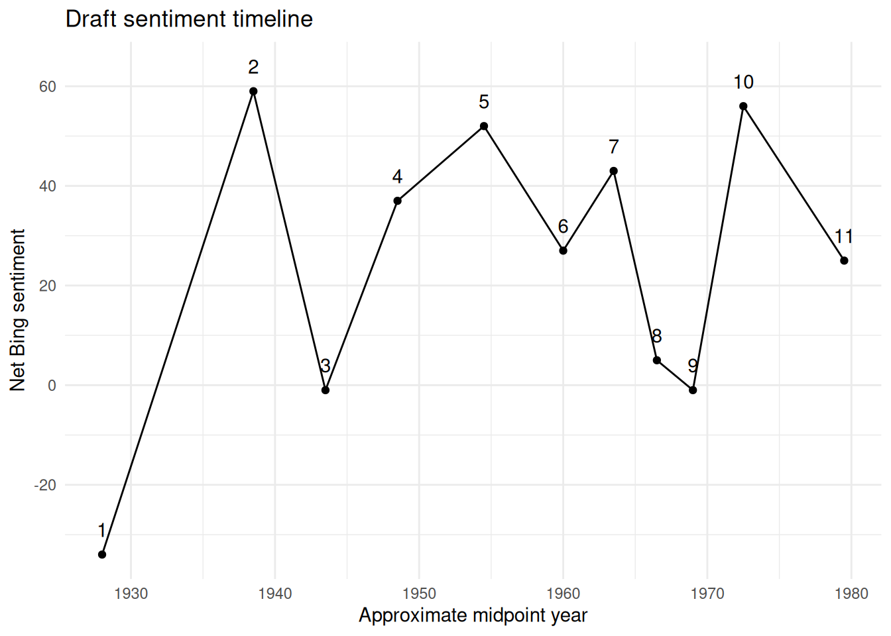

**Source warning:** Current corpus_data.json appears to be missing many dates/years, likely because setup.R removed numbers before exporting JSON. Rebuild from raw RDS/PDF with R/00_rebuild_raw_text_from_rds.R or R/00_ocr_scanned_pdfs.R before final timeline work.Timeline
This page uses the starter chapter metadata as a timeline scaffold. Treat these years as draft metadata until reviewed against the source text.

Extracted year candidates
If this table is thin or empty, rebuild from raw .rds or scanned PDFs. The existing JSON source may have had numbers removed before export.
No year candidates found in the current text source.Metadata needing review
# A tibble: 11 × 7
chapter chapter_title approx_start_year approx_end_year date_confidence
<dbl> <chr> <dbl> <dbl> <chr>
1 1 Earliest Memories 1922 1934 medium
2 2 The Teenage Period 1935 1942 medium
3 3 World War Two 1942 1945 high
4 4 My College Years B… 1946 1951 low
5 5 The CIA 1951 1958 low
6 6 Montevideo Uruguay 1958 1962 low
7 7 Headquarters Duty 1962 1965 low
8 8 Rio De Janeiro 1965 1968 low
9 9 The McLean Va. Yea… 1968 1970 low
10 10 Making a Career Ch… 1970 1975 medium
11 11 Post Rio to Retire… 1975 1984 low
# ℹ 2 more variables: timeline_review_status <chr>, notes <chr>